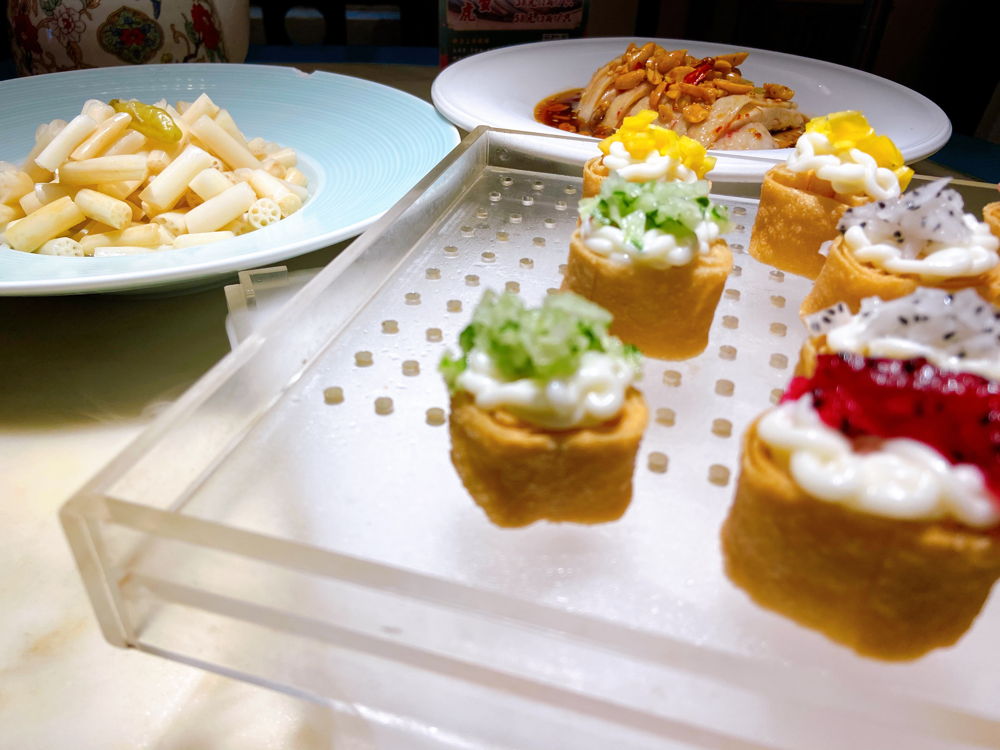

观前街
观前街
 双塔集市
双塔集市
 博物馆
博物馆
 平江路
平江路

江南花开
观前街（Guanqian Street），位于姑苏区，东起临顿路（醋坊桥），西至人民路（察院场），主街全长780米，因古寺玄妙观而得名。
观前街运用“儒道互补”的原理，以玄妙观为核心，同时在与北局广场相对应处的宫巷东侧，增设一摊贩市场配合玄妙观广场，形成三点式对称布局。观前街的建筑体量小，形成低矮的建筑轮廓线，建筑色彩以黑、白、灰为主。观前街主街分布着购物商场和老字号商店，餐饮业主要集中在太监弄一带，娱乐休闲场所主要集中在乔司空巷一带。
观前街运用“儒道互补”的原理，以玄妙观为核心，同时在与北局广场相对应处的宫巷东侧，增设一摊贩市场配合玄妙观广场，形成三点式对称布局。观前街的建筑体量小，形成低矮的建筑轮廓线，建筑色彩以黑、白、灰为主。观前街主街分布着购物商场和老字号商店，餐饮业主要集中在太监弄一带，娱乐休闲场所主要集中在乔司空巷一带。

在市集，不仅仅可以买到最新鲜的食材，还可以吃到苏州味道最正宗的小食，包括甜点、糕点、刚出笼的包子等各种各样的美食。挑选好了食材，可以选择现场加工成蔬菜沙拉、鲜榨果汁等。
沿河的生活市集区，聚集苏州不同领域的有趣摊主，为大家展现多元文化的交流，在这里你能看到独立设计师、创意手作人、旧物收藏家、生活美学品牌、烘焙师、音乐人、在地文化传播者或其他生活领域爱好者在这里分享他们的作品。
沿河的生活市集区，聚集苏州不同领域的有趣摊主，为大家展现多元文化的交流，在这里你能看到独立设计师、创意手作人、旧物收藏家、生活美学品牌、烘焙师、音乐人、在地文化传播者或其他生活领域爱好者在这里分享他们的作品。
苏州博物馆，位于苏州市姑苏区东北街204号，成立于1960年1月1日，馆址为太平天国忠王府。2006年10月6日，由贝聿铭设计的苏州博物馆本馆建成并正式对外开放。本馆占地面积约10700平方米，建筑面积19000余平方米，加上太平天国忠王府，总建筑面积达26500平方米，是收藏、展示、研究、传播苏州历史、文化、艺术的地方性综合性博物馆。
苏州博物馆共有吴地遗珍、吴塔国宝、吴中风雅、吴门书画四个基本陈列，馆藏藏品总数24729件/套，珍贵文物9647件/套，其中一级品222件/套，二级品829件/套，三级品8596件/套，以历年考古出土文物、明清书画和工艺品见长。
苏州博物馆共有吴地遗珍、吴塔国宝、吴中风雅、吴门书画四个基本陈列，馆藏藏品总数24729件/套，珍贵文物9647件/套，其中一级品222件/套，二级品829件/套，三级品8596件/套，以历年考古出土文物、明清书画和工艺品见长。
平江路是苏州的一条历史老街，是一条沿河的小路，其河名为平江河。平江路历史街区是苏州古城保存最为完整的一个区域，堪称古城缩影。对照南宋《平江图》及明末《苏州府城内水道总图》，平江路基本延续了唐宋以来的城坊格局，并保持着活力。
平江路南起干将东路，北越白塔东路和东北街相接，古名叫做"十泉里"，较早出现了1834年的《吴门表隐》中，说道:"平江路古名十泉里，有古井十口，华阳桥南一，奚家桥南一，苑桥北一"。
平江路南起干将东路，北越白塔东路和东北街相接，古名叫做"十泉里"，较早出现了1834年的《吴门表隐》中，说道:"平江路古名十泉里，有古井十口，华阳桥南一，奚家桥南一，苑桥北一"。
“江南花开”是我们在旅行途中偶然吃到的一道江南菜。当时在观前街散步，到了饭点想寻一寻附近的知名小吃，但节假日到处都人满为患。关掉了手机上的美团页面，漫无目的继续闲逛。走出了观前街的主干路，街口有一家装饰低调的江南菜名为探花，我们抱着尝试的心态走进去点了一道名叫“江南花开”的菜式。这家店的菜品令人意外的美味。
我们来到新的城市总是习惯于参考美团和大众点评等平台的推荐，去所谓“网红”景点打卡吃饭，很少凭着感觉、自做攻略去体会生活的方方面面。这次的江南花开给我留下深刻的印象不仅因为这道菜新奇好吃，而是让我想起旅游途中凭借自己的感觉去发现新东西是多么美好的一件事。
我们来到新的城市总是习惯于参考美团和大众点评等平台的推荐，去所谓“网红”景点打卡吃饭，很少凭着感觉、自做攻略去体会生活的方方面面。这次的江南花开给我留下深刻的印象不仅因为这道菜新奇好吃，而是让我想起旅游途中凭借自己的感觉去发现新东西是多么美好的一件事。